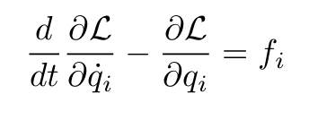
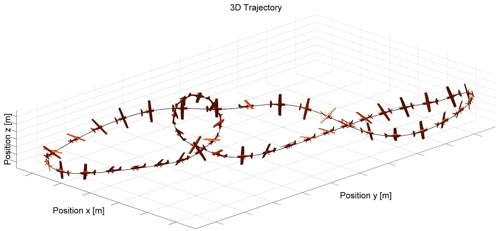

|
I am a Master of Science in Robotics student at Department of Mechanical Engineering at University of Delaware, where I have started working on control and dynamics of legged robots under the guidance of Dr. Ioannis Poulakakis. In the past, I have worked at Space Application Center - ISRO as a Robotics Project Intern on formulating a control system and a closed form solution to the inverse kinematics of a Walk-And-Roll Rover leg. I grew up in Porbandar City, India, a small coastal town in the state of Gujarat. Since then, I've lived in Jinja (Uganda), Ahmedabad (Gujarat), and now living in Newark (Delaware). The things that I am very passionate about are Street Photography and Rock music. |
{kind=link}
|
I'm interested in Dynamics and Control, Computer Vision, Reinforcement Learning, Optimization; anything and everything that piques my interest. |
|
2019 (Github) These are the systems that exhibits both continuous part (described by a differential equation) and discrete dynamic behavior, a jump (described by a state machine or automaton). |
|  |
2019 (Github) A tutorial to show Lagrangian Equations can be used to derive equations of motion of any system. |
|
2019 (Github) A tutorial to show how a HZD based controller be used to drive a system. |

|
2019 (Github) A Simulation of 3-Link biped robot with a stance leg, swing leg and a torso. It is a hybrid system with continuous swing phase and a discrete impact map. |
|  |
2019 (Github) A tutorial to see how to optimise a trajectory of any system using FMINCON. |

|
2019 (Github) A Simulation of 5-Link biped robot is almost same as simulating a 3-link biped robot. Additionally it requires paramaterizing the trajectory of the foot of the swing leg and also optimising the trajectory and initial conditions for the simulation. |